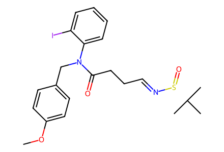
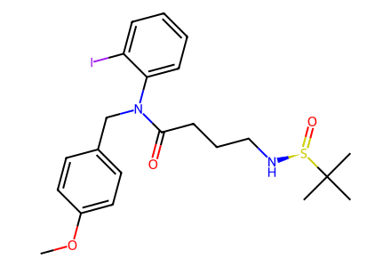
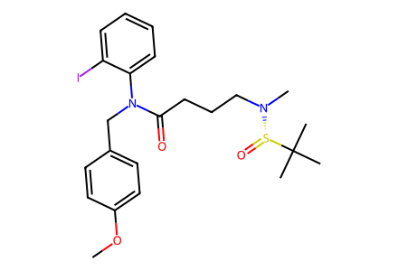
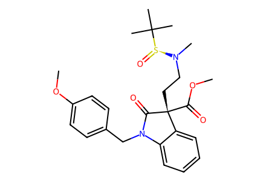
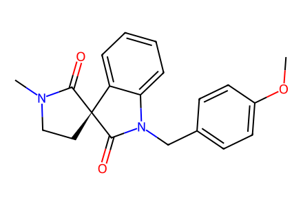
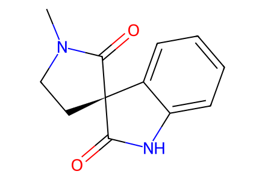
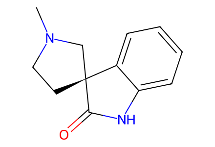

COc1ccc(CN(C(=O)CC/C=N/[S@@](=O)C(C)(C)C)c2ccccc2I)cc17 个分子、6 个反应事件，覆盖现有 SI 的 10→11→12→13→14→15→1。已补入图式中的试剂、溶剂和产率；前体 10 的制备及正文缺失，不能计为全文全路线完成。待独立专家复核。
完整 JSON · 逐步 CSV · 路线序列 · SDF · HRMS 核对
| 事件 | 分子连接 | 报告产率 | Canonical reaction SMILES |
|---|---|---|---|
| E01 | 10 → 11 | 11: 93% | COc1ccc(CN(C(=O)CC/C=N/[S@@](=O)C(C)(C)C)c2ccccc2I)cc1>>COc1ccc(CN(C(=O)CCCN[S@@](=O)C(C)(C)C)c2ccccc2I)cc1 |
| E02 | 11 → 12 | 12: 96% | COc1ccc(CN(C(=O)CCCN[S@@](=O)C(C)(C)C)c2ccccc2I)cc1>>COc1ccc(CN(C(=O)CCCN(C)[S@@](=O)C(C)(C)C)c2ccccc2I)cc1 |
| E03 | 12 → 13 | 13: 87% | COc1ccc(CN(C(=O)CCCN(C)[S@@](=O)C(C)(C)C)c2ccccc2I)cc1>>COC(=O)[C@@]1(CCN(C)[S@@](=O)C(C)(C)C)C(=O)N(Cc2ccc(OC)cc2)c2ccccc21 |
| E04 | 13 → 14 | 14: 85% | COC(=O)[C@@]1(CCN(C)[S@@](=O)C(C)(C)C)C(=O)N(Cc2ccc(OC)cc2)c2ccccc21>>COc1ccc(CN2C(=O)[C@@]3(CCN(C)C3=O)c3ccccc32)cc1 |
| E05 | 14 → 15 | 15: 76% | COc1ccc(CN2C(=O)[C@@]3(CCN(C)C3=O)c3ccccc32)cc1>>CN1CC[C@@]2(C(=O)Nc3ccccc32)C1=O |
| E06 | 15 → 1 | 1: 42% | CN1CC[C@@]2(C(=O)Nc3ccccc32)C1=O>>CN1CC[C@]2(C1)C(=O)Nc1ccccc12 |

COc1ccc(CN(C(=O)CC/C=N/[S@@](=O)C(C)(C)C)c2ccccc2I)cc1
COc1ccc(CN(C(=O)CCCN[S@@](=O)C(C)(C)C)c2ccccc2I)cc1
COc1ccc(CN(C(=O)CCCN(C)[S@@](=O)C(C)(C)C)c2ccccc2I)cc1
COC(=O)[C@@]1(CCN(C)[S@@](=O)C(C)(C)C)C(=O)N(Cc2ccc(OC)cc2)c2ccccc21
COc1ccc(CN2C(=O)[C@@]3(CCN(C)C3=O)c3ccccc32)cc1
CN1CC[C@@]2(C(=O)Nc3ccccc32)C1=O
CN1CC[C@]2(C1)C(=O)Nc1ccccc12